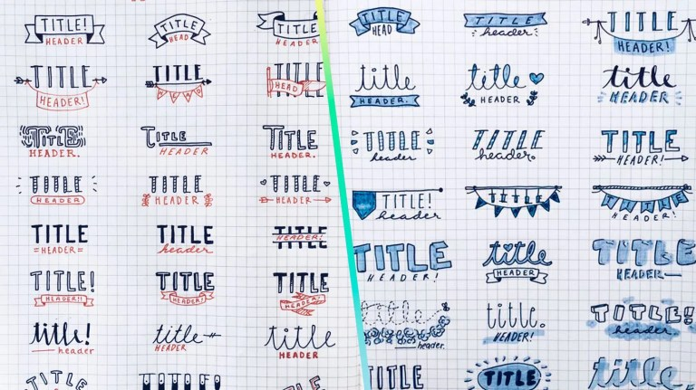
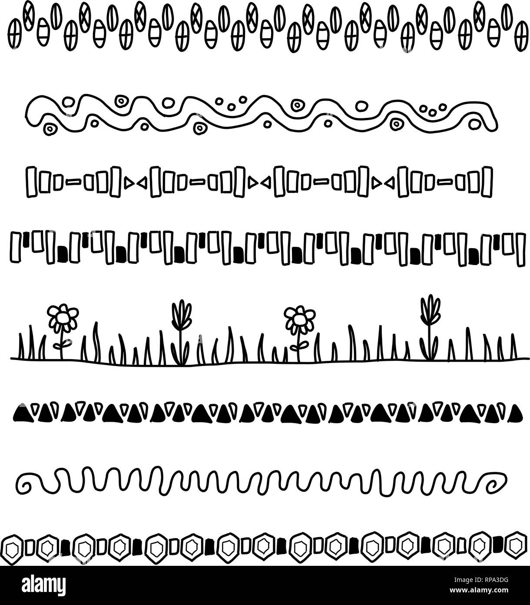
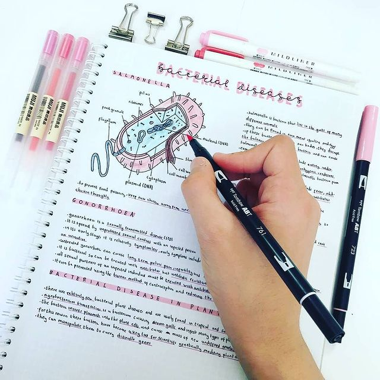
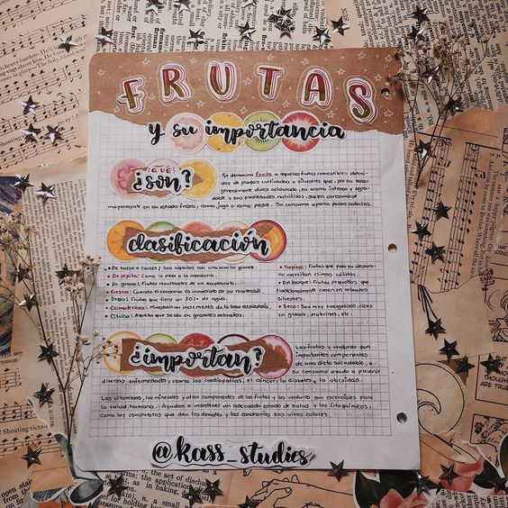
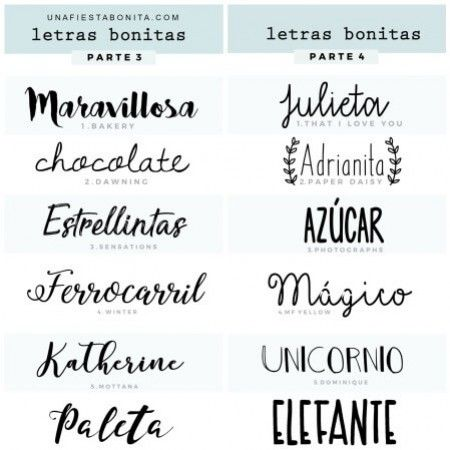

Cuando estás comenzando con las notas bonitas, te sugiero no complicarte mucho la vida. Puedes comenzar haciendo apuntes bonitos sin lettering con los materiales que ahora son tus favoritos. Conforme vayas practicando te irás dando cuenta de materiales que quieras mejorar, tal vez la punta de tu pluma ya te parece demasiado gruesa, o en vez de escribir con lápiz preferirías usar pluma. Toma todo eso en cuenta y entonces empieza a probar nuevos materiales. Por eso te comparto los materiales básicos con los que puedes comenzar a probar hacer apuntes bonitos. Recuerda que algunos pueden no gustarte, está bien, todos elegimos cosas diferentes. Estos son los materiales básicos para apuntes bonitos:
El título es lo más importante en tus apuntes, por eso debe ser el más llamativo y fácil de distinguir. Además, te ayudará a encontrar fácilmente el tema que tengas que estudiar o repasar.
Después de cada tema usa diferentes “doodles” o divisores para separar. Así cuando decidas buscar un tema en específico te ayudará fácilmente. Si buscas ideas para apuntes puedes ir a pinterest y te saldrán un montón.
Para entender mejor los apuntes siempre es buena idea hacer dibujos relacionados al tema, te ayudará a memorizar con mayor facilidad. Además, puedes colorear y tendrás unos apuntes bonitos, super alegres y coloridos.
Una de las tendencias más actuales en apuntes es usar diferentes texturas de papel, como el papel kraft roto de esta imagen. Se ve hermoso, no es difícil de hacer y le dará el toque extra a tus notas. Aprovecha el estilo collage con estos recortes de papel
Experimenta con diferentes tipos de letra y tendrás unos apuntes super dinámicos y con un sello de personalidad. También, es muy parecida la idea de los títulos llamativos. usa diferentes tipografías o letras y al instante serán apuntes bonitos.
Para pricipiantes